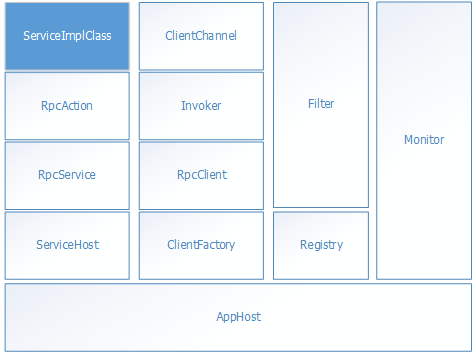

层次结构¶
AppHost¶
AppHost是RpcLite的基础，AppHost中主要有ServiceHost和ClientFactory，此外还有Registry、Filter、Monitor等。 AppHost需要从配置RpcConfig中创建，通过RpcInitializer可以创默认AppHost，ClientFactory关联的就是默认AppHost。也可以通过AppHost的构造函数来创建额外的AppHost（除测试外不推荐创建额外的AppHost）。
ServiceHost¶
ServiceHost负责在客户端有请求到来时把请求转换成对服务实现类的调用并返回数据。
ClientFactory¶
ClientFactory负责在客户端创建RpcClient对象，创建RpcClient对象最主要的参数是契约接口（.Net Interface）,RpcLite会包装一个实现契约接口的透明代理类，在使用RpcClient时和使用接口变量一样简单。
var serviceAddress = "http://localhost:11651/api/service/";
//返回的结果对象默认是契约接口类型
IProductService client = ClientFactory.GetInstance<IProductService>(serviceAddress);
var dateTimeString = client.GetDateTimeString();
Invoker¶
RpcClient通过Invoker来调用服务，在Invoker中可以作一些调度如实现负载均衡，把调用分发到集群中的不同服务器。默认Invokier实现只支持一个服务地址无调度功能，用户有需要可自定义。
ClientChannel¶
Invoker对服务最终的调用是通过ClientChannel来实现，Invoker把请求参数序列化成字节流后对过ClientChannel发送到服务端，在接收到服务端的返回报文后再反序列化成结果对象。
Registry¶
Registry负责把服务提供者地址注册到治理系统以及通过服务信息获取服务提供者的地址。
Filter¶
在服务端及客户端都可以添加Filter，Filter可以改变调用的行为，如修改请求或返回参数。
Monitor¶
用于监控，比如记录服务调用次数、时间、响应时间等，在Monitor中也可以实现Filter的一些功能比如修改请求参数，但不建议这样使用，Monitor应该只是读取服务调用时的一些数据然后记录而不要作修改。